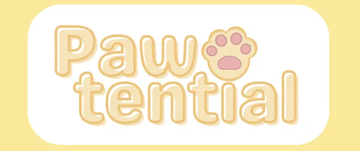
Cat
Gym
Katter trenger stimulering hver dag, men mange katteeiere har ikke tid eller energi til å leke med katten jevnlig. CatGym bidrar til å løse dette problemet.
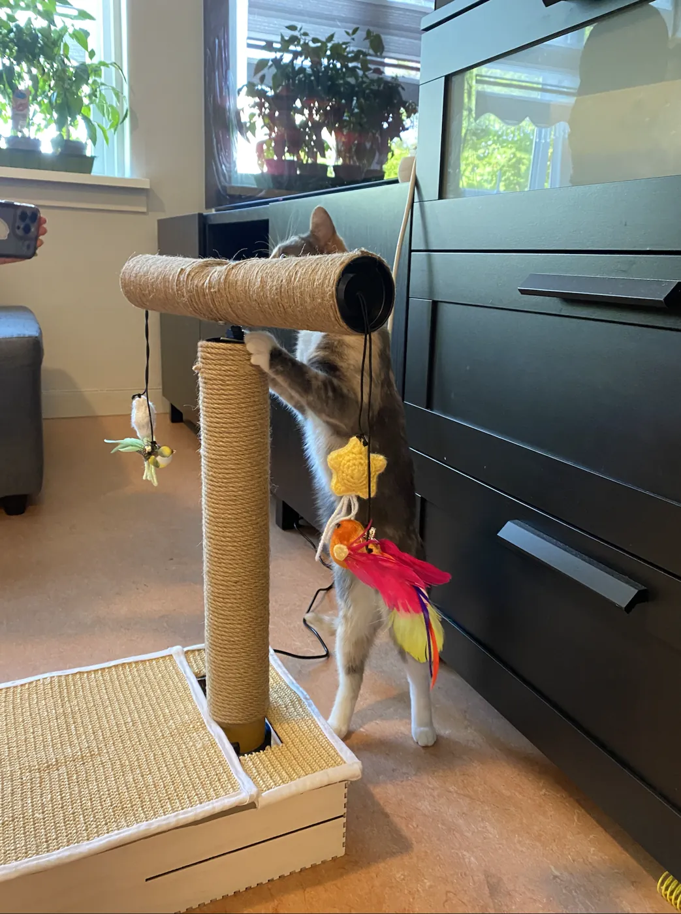
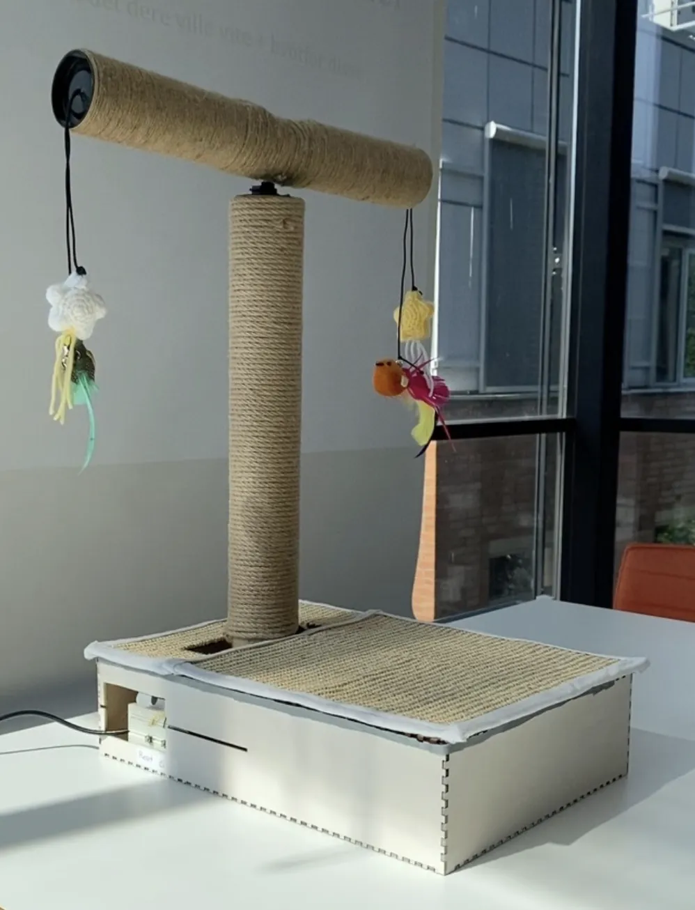
CatGym er et klorestativ som slår seg på når katten tråkker på det.
Med IN1060-temaet «av og på» som ramme designet vi i Pawtential en automatisert artefakt sammen med fire katteeiere, gjennom fire iterasjoner på fire måneder.
Rolle, team & leveranse
Interaksjonsdesigner & prototyper.
Interaksjonen med Arduino.
Fra konsept til fungerende prototype.
5 studenter i Pawtential.
4 katteeiere som meddesignere.
Fysisk artefakt.
Arduino Uno, vektsensor og mikroservo.
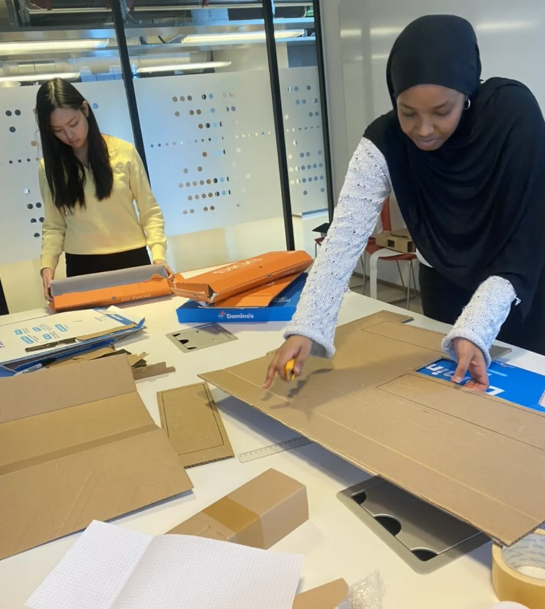
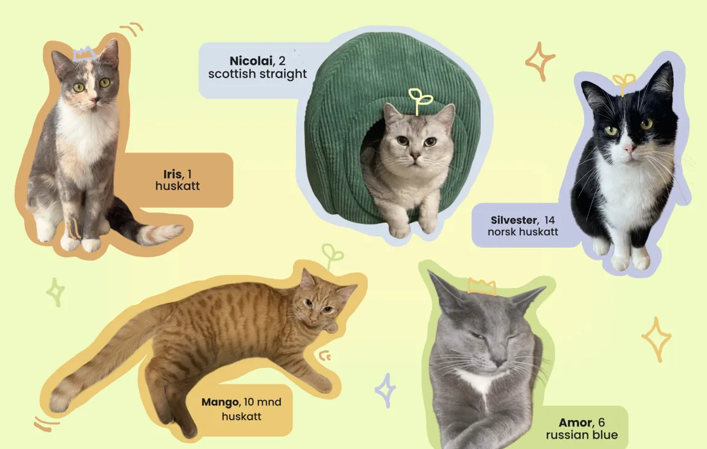
Designprosessen
Fra intervjuer og workshop med katteeiere, via pappmodeller, til et ferdig artefakt kattene faktisk ville leke med.
-
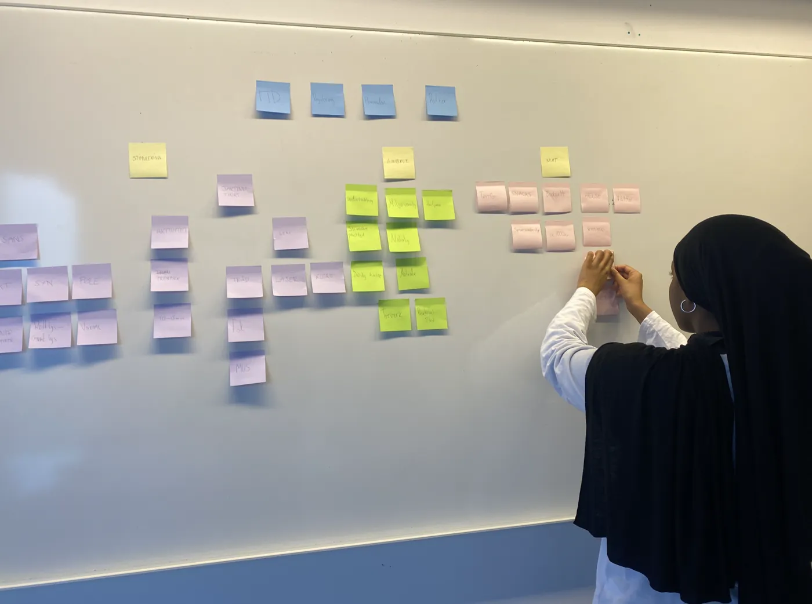
Innsikt
Intervjuer med fire katteeiere, kodet og sortert i et affinitetsdiagram. Behovet som gikk igjen var stimulering og utløp for jaktinstinktet.
-
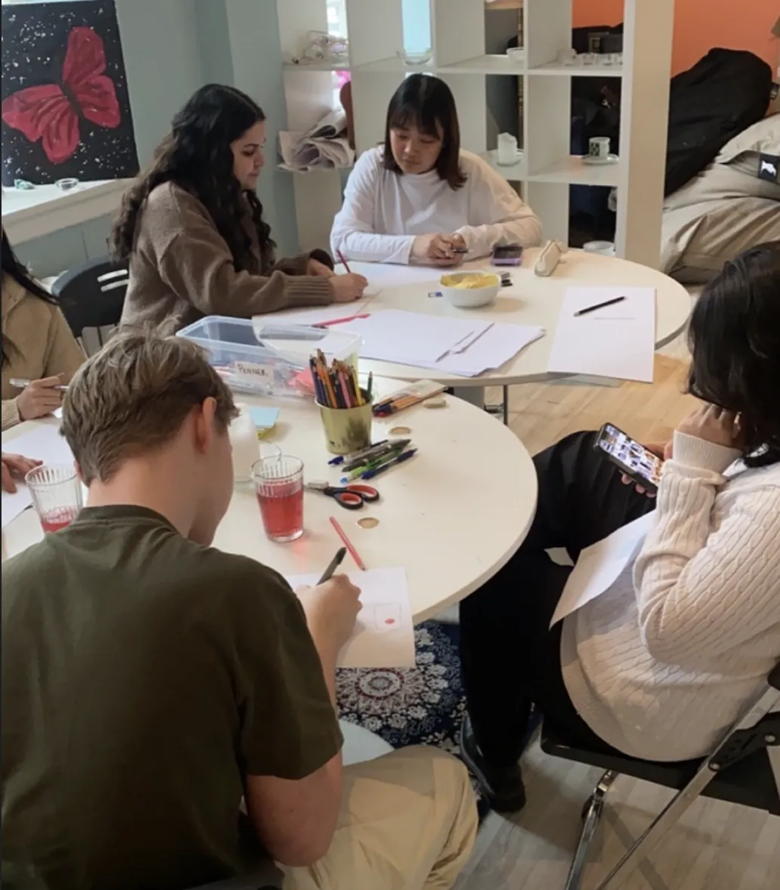
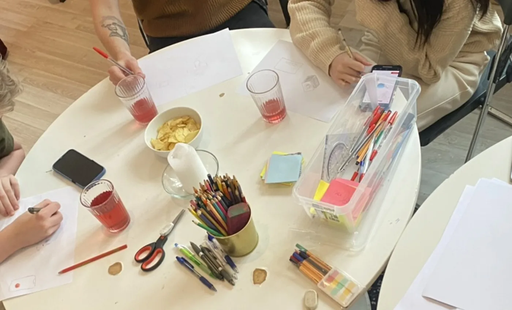
Workshop
Katteeierne skisserte egne idéer sammen med oss. En automatisk tryllestav, inspirert av babygym, ble til CatGym.
-
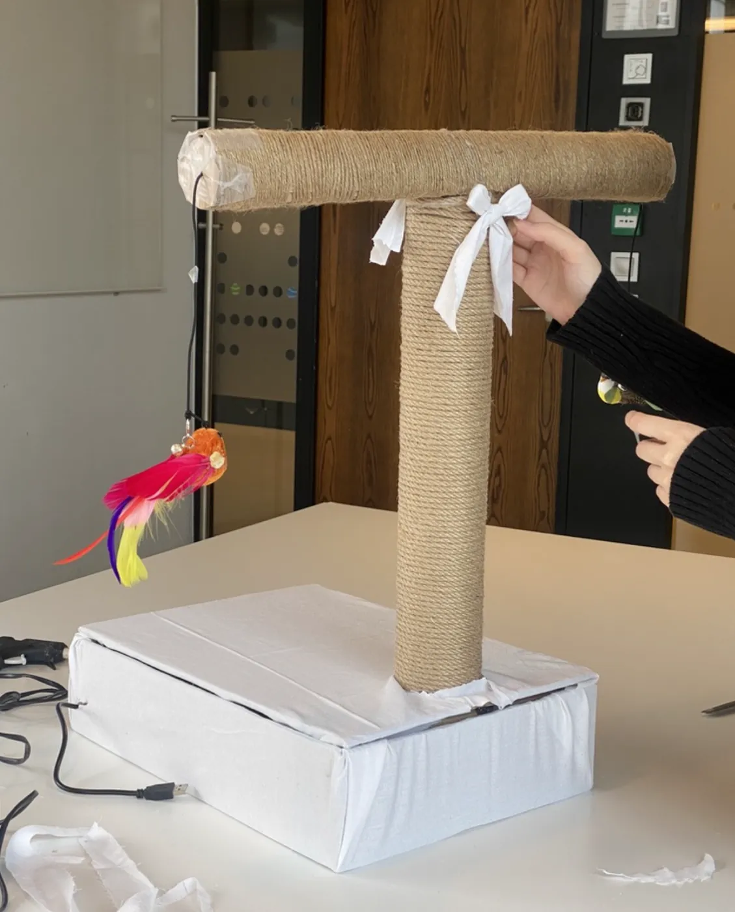
Prototyping
Papp og papprør før treverk. Vi valgte vektsensor fordi den, i motsetning til lys- og ultralydsensor, ikke forveksler katt og menneske.
-
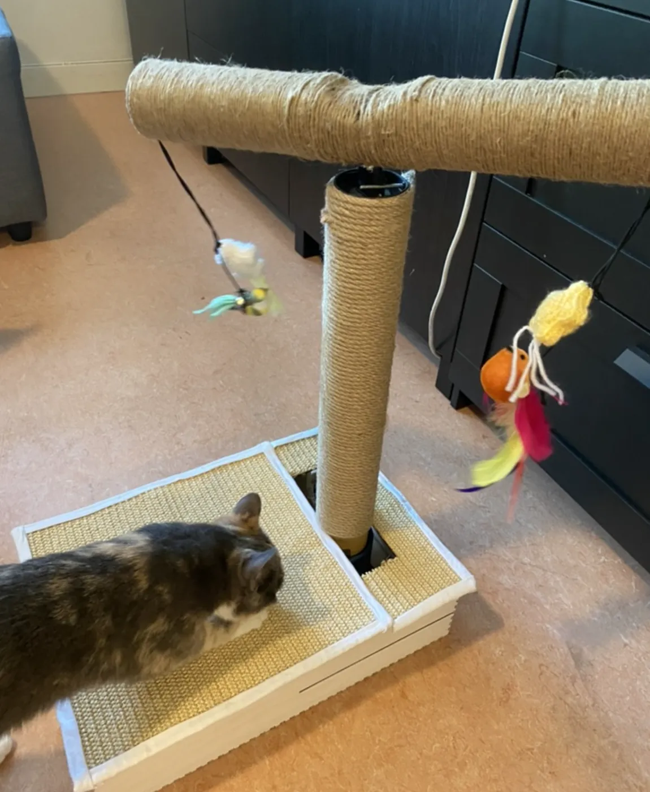
Testing
Testet hjemme hos kattene. Først unngikk de platen, men med sisal på toppen gikk de rett bort til den, uten godbiter.
Ferdig produkt
Når katten tråkker på platen, registrerer vektsensoren over 200 gram og slår CatGym på. Armen roterer 180 grader, så lekene «flyr» og bjellene ringer. Etter ett minutt slår den seg av, til katten aktiverer den igjen. En av/på-knapp og en reset-knapp gir eieren kontroll.
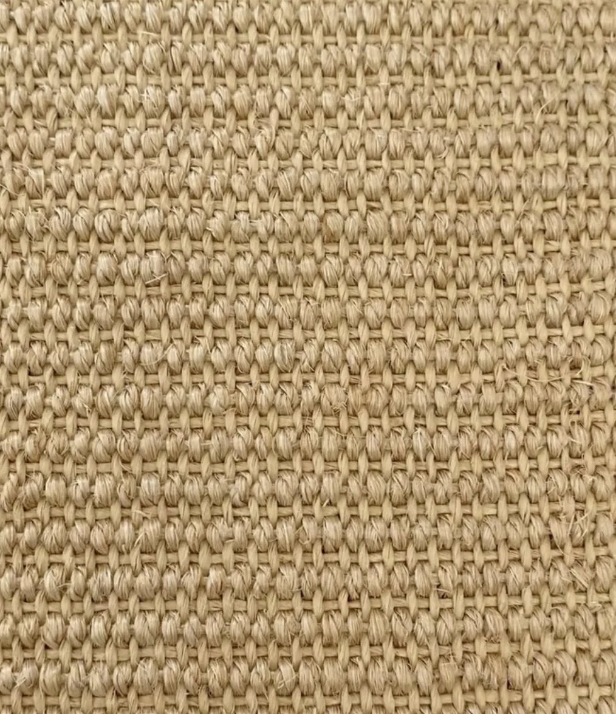
Hva vi
bygde med
- SisalmatteKlorflate på toppen av basen
- JutetauTvinnet rundt stolpen og lekearmen
- Fjærleker og heklede stjernerHenger i snor fra hver ende av armen
- Laserkuttet treboksBasen som huser elektronikken
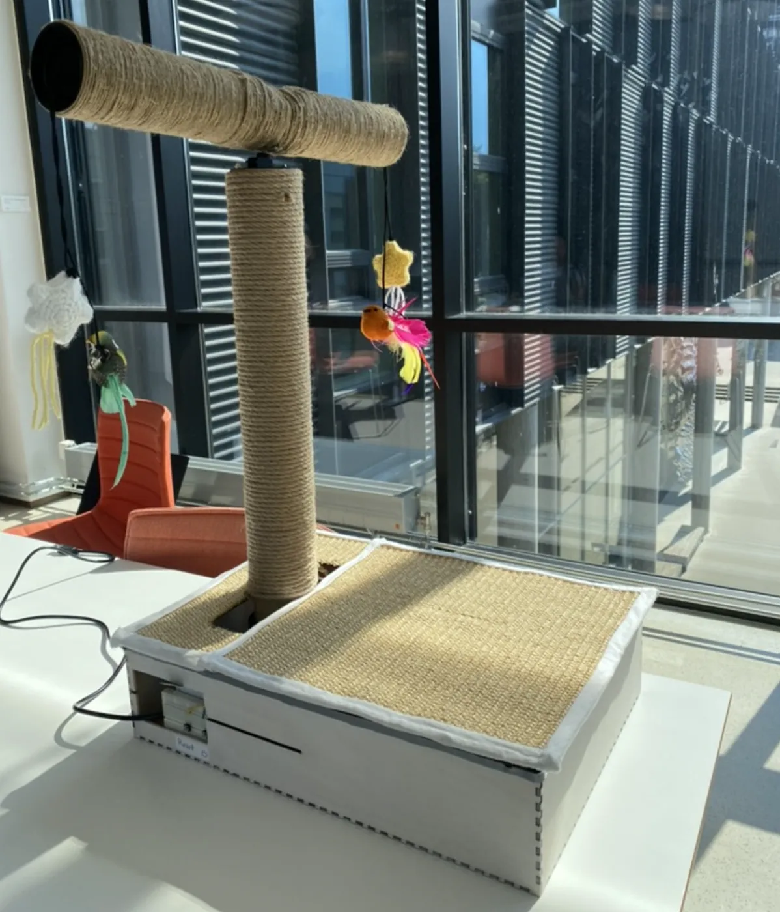
Resultat
«Det ser ut som de har lekt med den mye nå, men trenger å sove litt for å kunne leke mer.»
I siste test slo den ene katten CatGym på med sin egen vekt, og den andre jaktet på fuglene. Eieren ville beholde CatGym hjemme etter prosjektet.
Utfordringer
Å designe for noe uforutsigbart
Katter kan ikke si hva de synes, og humøret varierer fra dag til dag. Vi måtte observere og tolke atferd.
Få katten til å tråkke på platen
Kattene unngikk platen først. Sisal ga dem en grunn til å gå på den, uten godbiter.
Læring
«Enkle, robuste løsninger gir ofte bedre brukeropplevelse enn mer avanserte, men ustabile funksjoner.»
Prosjektet lærte meg verdien av iterativt design og brukertilpasning. Jeg fikk innsikt i hvordan teknisk kompleksitet påvirker designbeslutninger, og at det å holde løsningen enkel og robust er vel så viktig som å legge til funksjoner.